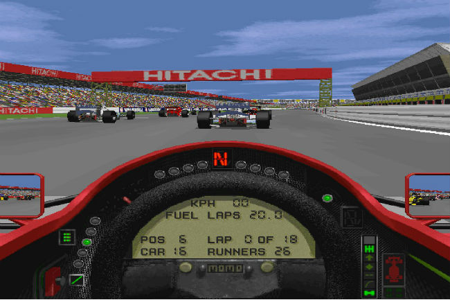
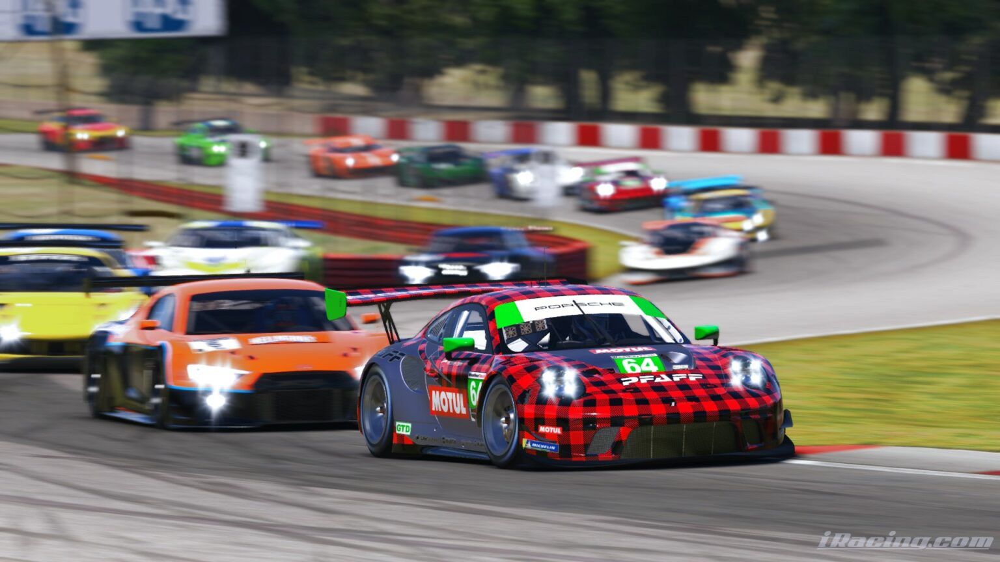
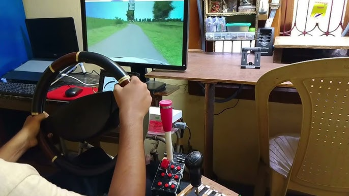
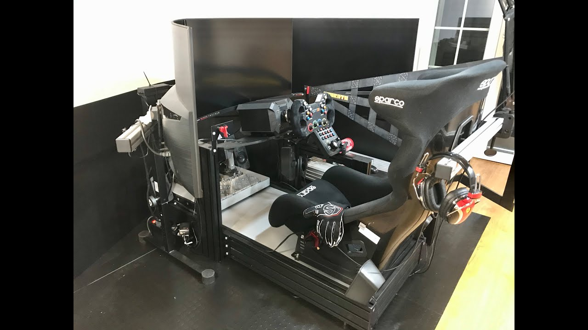
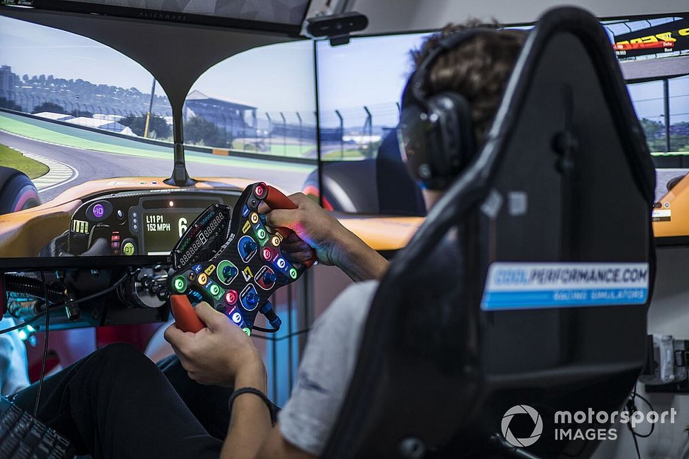
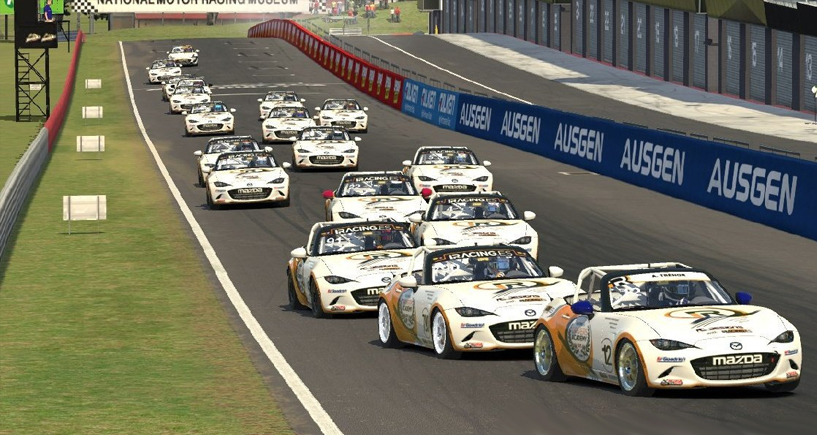

También te puede interesar
.jpeg)
Hablamos sobre la profesionalización
del simracing.
Supercup en iRacing
Somos muchos los pertenecientes a la generación de los 90, que hemos visto la mejora a pasos agigantados, de los videojuegos de carreras. Todos, o casi todos, cuando éramos pequeños, hemos jugado alguna vez al Gran Turismo, al Colin McRae Rally, incluso a algún juego de Formula 1, aunque no se estilaba mucho, ya que el primer juego que yo tuve de Formula 1, era el F1 1996, aunque ya veía la Fórmula 1 desde bien antes.
Es ahí en esa época, cuando crecía la pasión por la competición para los más jóvenes, soñando algún día poder ser Ayrton Senna o Michael Schumacher, y ahí empezamos todos a practicar con nuestras videoconsolas, pensando que por qué no, algún día poder llegar a dar el salto a la realidad.
A medida que pasaron los años, dichos videojuegos que disfrutábamos, fueron evolucionando, tanto gráficamente, como en físicas y comportamientos del coche, llegando a ser como es hoy en día, una herramienta indispensable para cualquier piloto real, que necesite entrenar, aprenderse circuitos e incluso probar reglajes del coche que después se traslada a la realidad.
|  |  |  |  |
|---|---|---|---|
| Juego de carreras de los 90 | Simulador profesional, iRacing | Como muchos empezaron | Como es hoy en día |
Hoy en día existe una gran variedad de plataformas o "videojuegos" que podemos llamar simuladores , donde podemos destacar los siguientes:
Somos muchos los apasionados de este deporte que es el Motorsport, sin embargo, es un mundo económicamente muy prohibitivo, ya que por ejemplo,
correr una temporada en categorías muy básicas, el coste puede subir a 200.000€. Por eso, muchos de nosotros optamos por el Simracing.
Es una herramienta "barata", dado que también existen distintos niveles de material, pero digamos que con un PC, volante y pedales, puedes empezar en este mundillo.
Aquí os dejo un enlace, que os redirijirá a la historia de un piloto real de la GT3, que a través de una competición virtual (que es donde comenzó), pudo dar
el salto al mundo real.
James Baldwin, del simulador a la realidad
Hoy en día, el simracing, es muy utilizado para los nuevos pilotos, en cuanto a aprenderse circuitos nuevos, entrenar, e incluso, como hacen en las competiciones más importantes, como la F1, tienen su propio simulador en el que prueban las nuevas piezas creadas por fábrica, nuevas configuraciones y reglajes, para después llevarlo al coche real. Por eso cada vez, este es un mundo que se está mezclando a pasos agigantados con la realidad.
De hecho, aquí tenemos al actual campeón del mundo de F1 Max Verstappen, hablando de lo que hace en sus ratos libres, y como se pasa todo el tiempo en su simulador particular, entrenando y compitiendo, porque a quien nos gusta este mundillo, es lo más cercano que tenemos.
Max hablando sobre simracing |
Artículo hablando sobre simracinghttps://autovehiculo.com/que-es-simracing/ |
|---|
También te puede interesar |
|
|---|---|
|  |
|
| Simracing, ¿más que un hobby? Hablamos sobre la profesionalización del simracing. |
2024 Porsche TAG Heuer Esports Supercup en iRacing |